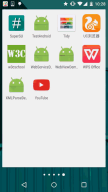
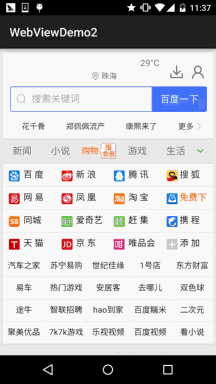
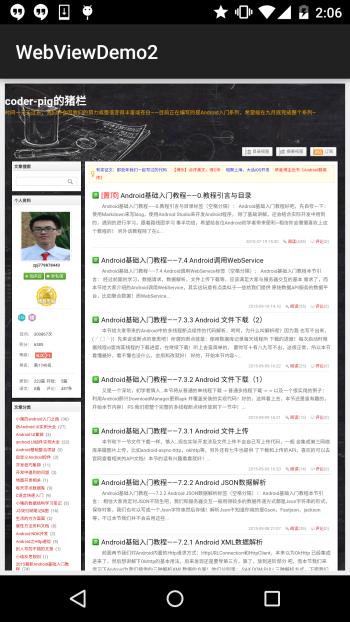

一、本节引言
本节给大家带来的是Android中的一个用于显示网页的控件：WebView(网页视图)。
现在Android应用 层开发的方向有两种：客户端开发和HTML5移动端开发！
所谓的HTML5端就是：HTML5 + CSS + JS来构建 一个网页版的应用,而这中间的媒介就是这个WebView,而Web和网页端可以通过JS来进行交互,比如, 网页读取手机联系人,调用手机相关的API等！
而且相比起普通的客户端开发,HTML5移动端有个优势： 可以用百分比来布局,而且如果HTML5端有什么大改,我们不用像客户端那样去重新下一个APP,然后 覆盖安装,我们只需修改下网页即可！而客户端...惨不忍睹,当然HTML5也有个缺点,就是性能的问题, 数据积累,耗电问题,还有闪屏等等...
另外,针对这种跨平台我们可以使用其他的第三方快速开发 框架,比如PhoneGap,对了,还有现在网络上很多一键生成APP类的网站,用户通过拖拉,设置图片 之类的简单操作就可以生成一个应用,大部分都是用的HTML5来完成的！有模板,直接套,你懂的~ 好的,话不多说,开始本节内容！
二、什么是WebView？
答：Android内置webkit内核的高性能浏览器,而WebView则是在这个基础上进行封装后的一个 控件,WebView直译网页视图,我们可以简单的看作一个可以嵌套到界面上的一个浏览器控件！
三、相关方法
先上官方文档：WebView 并不打算一个个地去讲属性,用到哪个写哪个,其他的自行查阅文档！ 除了直接WebView外我们还可以添加你自己的行为,可以自行定制下述类：
WebChromeClient：辅助WebView处理Javascript的对话框、网站图标、网站title、加载进度等！ 比如下面这些：
| 方法 | 作用 |
|---|---|
| onJsAlert(WebView view,String url,String message,JsResult result) | 处理Js中的Alert对话框 |
| onJsConfirm(WebView view,String url,String message,JsResult result) | 处理Js中的Confirm对话框 |
| onJsPrompt(WebView view,String url,String message,String defaultValue,JsPromptResult result) | 处理Js中的Prompt对话框 |
| onProgressChanged(WebView view,int newProgress) | 当加载进度条发生改变时调用 |
| onReceivedIcon(WebView view, Bitmap icon) | 获得网页的icon |
| onReceivedTitle(WebView view, String title) | 获得网页的标题 |
WebViewClient：辅助WebView处理各种通知与请求事件！ 比如下面这些方法：
| 方法 | 作用 |
|---|---|
| onPageStared(WebView view,String url) | 通知主程序网页开始加载 |
| onPageFinished(WebView view,String url,Bitmap favicon) | 通知主程序,网页加载完毕 |
| doUpdateVisitedHistory(WebView view,String url,boolean isReload) | 更新历史记录 |
| onLoadResource(WebView view,String url) | 通知主程序WebView即将加载指定url的资源 |
| onScaleChanged(WebView view,float oldScale,float newScale) | ViewView的缩放发生改变时调用 |
| shouldOverrideKeyEvent(WebView view,KeyEvent event) | 控制webView是否处理按键时间,如果返回true,则WebView不处理,返回false则处理 |
| shouldOverrideUrlLoading(WebView view,String url) | 控制对新加载的Url的处理,返回true,说明主程序处理WebView不做处理,返回false意味着WebView会对其进行处理 |
| onReceivedError(WebView view,int errorCode,String description,String failingUrl) | 遇到不可恢复的错误信息时调用 |
WebSettings：WebView相关配置的设置，比如setJavaScriptEnabled()设置是否允许JS脚本执行 部分方法如下：
| 方法 | 作用 |
|---|---|
| getSettings() | 返回一个WebSettings对象,用来控制WebView的属性设置 |
| loadUrl(String url) | 加载指定的Url |
| loadData(String data,String mimeType,String encoding) | 加载指定的Data到WebView中.使用"data:"作为标记头,该方法不能加载网络数据.其中mimeType为数据类型如:textml,image/jpeg. encoding为字符的编码方式 |
| loadDataWithBaseURL(String baseUrl, String data, String mimeType, String encoding, String historyUrl) | 比上面的loadData更加强大 |
| setWebViewClient(WebViewClient client) | 为WebView指定一个WebViewClient对象.WebViewClient可以辅助WebView处理各种通知,请求等事件。 |
| setWebChromeClient(WebChromeClient client) | 为WebView指定一个WebChromeClient对象,WebChromeClient专门用来辅助WebView处理js的对话框,网站title,网站图标,加载进度条等 |
这里重要区分三个load方法的区别：
loadUrl()：直接显示网页内容(单独显示网络图片)，一般不会出现乱码。 loadData(data, "text/html", "UTF-8")：用来加载URI格式的数据，不能通过网络来加载内容， 不能加载图片，而且经常会遇到乱码的问题，我们知道String类型的数据主要是Unicode编码的， 而WebView一般为了节省资源使用的是UTF-8编码，尽管我们按上面写了，但是还需要为webView设置： webview.getSettings().setDefaultTextEncodingName("UTF -8"); loadDataWithBaseURL(baseUrl, string, "text/html", "utf-8", null)：loadData类的一个 增强类，可以加载图片，baseUrl为你存储的图片路径，而且只需在这里设置utf-8就可以解决乱码 问题了！
这里只是列举了部分属性而已，其他的还需自行查阅官方文档：
WebChromeClient文档
WebViewClient文档
WebSettings文档
四、一些常见需求讲解
需求1：根据URL加载网页
1）直接在Activity上加载一个WebView
运行效果图：

实现代码：
public class MainActivity extends AppCompatActivity {
private WebView webView;
private long exitTime = 0;
@Override
protected void onCreate(Bundle savedInstanceState) {
super.onCreate(savedInstanceState);
setContentView(R.layout.activity_main);
webView = new WebView(this);
webView.setWebViewClient(new WebViewClient() {
//设置在webView点击打开的新网页在当前界面显示,而不跳转到新的浏览器中
@Override
public boolean shouldOverrideUrlLoading(WebView view, String url) {
view.loadUrl(url);
return true;
}
});
webView.getSettings().setJavaScriptEnabled(true); //设置WebView属性,运行执行js脚本
webView.loadUrl("http://www.baidu.com/"); //调用loadUrl方法为WebView加入链接
setContentView(webView); //调用Activity提供的setContentView将webView显示出来
}
//我们需要重写回退按钮的时间,当用户点击回退按钮：
//1.webView.canGoBack()判断网页是否能后退,可以则goback()
//2.如果不可以连续点击两次退出App,否则弹出提示Toast
@Override
public void onBackPressed() {
if (webView.canGoBack()) {
webView.goBack();
} else {
if ((System.currentTimeMillis() - exitTime) > 2000) {
Toast.makeText(getApplicationContext(), "再按一次退出程序",
Toast.LENGTH_SHORT).show();
exitTime = System.currentTimeMillis();
} else {
super.onBackPressed();
}
}
}
}
2）布局代码中设置WebView
相信大家都见过很多的新闻类App吧或者门户信息类的App,他的结构可能是这样的：

左上角一个点击关闭当前Activity的按钮,中间是新闻的title,右面是一个刷新按钮, 而在右下角可能有这样一个悬浮的按钮,当我们滑动超过屏幕宽度他就会显示出来, 当用户点击后又会回滚到网页的顶部！下面我们来简单的实现下！
运行效果图：

实现代码：
MainActivity.java：
public class MainActivity extends AppCompatActivity implements View.OnClickListener {
private Button btn_back;
private TextView txt_title;
private Button btn_top;
private Button btn_refresh;
private WebView wView;
private long exitTime = 0;
@Override
protected void onCreate(Bundle savedInstanceState) {
super.onCreate(savedInstanceState);
setContentView(R.layout.activity_main);
bindViews();
}
private void bindViews() {
btn_back = (Button) findViewById(R.id.btn_back);
txt_title = (TextView) findViewById(R.id.txt_title);
btn_top = (Button) findViewById(R.id.btn_top);
btn_refresh = (Button) findViewById(R.id.btn_refresh);
wView = (WebView) findViewById(R.id.wView);
btn_back.setOnClickListener(this);
btn_refresh.setOnClickListener(this);
btn_top.setOnClickListener(this);
wView.loadUrl("http://www.baidu.com");
wView.setWebChromeClient(new WebChromeClient() {
//这里设置获取到的网站title
@Override
public void onReceivedTitle(WebView view, String title) {
super.onReceivedTitle(view, title);
txt_title.setText(title);
}
});
wView.setWebViewClient(new WebViewClient() {
//在webview里打开新链接
@Override
public boolean shouldOverrideUrlLoading(WebView view, String url) {
view.loadUrl(url);
return true;
}
});
}
@Override
public void onClick(View v) {
switch (v.getId()) {
case R.id.btn_back:
finish(); //关闭当前Activity
break;
case R.id.btn_refresh:
wView.reload(); //刷新当前页面
break;
case R.id.btn_top:
wView.setScrollY(0); //滚动到顶部
break;
}
}
@Override
public void onBackPressed() {
if (wView.canGoBack()) {
wView.goBack();
} else {
if ((System.currentTimeMillis() - exitTime) > 2000) {
Toast.makeText(getApplicationContext(), "再按一次退出程序",
Toast.LENGTH_SHORT).show();
exitTime = System.currentTimeMillis();
} else {
finish();
}
}
}
}
问题答疑：
相信细心的朋友看到，我们回到一开始加载的页面后，按返回键，按了多次还是没有退出 当前的APP，后来还是我们手动去点back键通过调用finish方法才能关闭当前的Activity? 这是为什么呢？明明百度一下已经是第一个页面啊？
答：其实发生这个的原因是：网址的重定向问题引起的，其实我们在访问百度的时候：
尽管我们load的是www.baidu.com，但是百度做了重定向，跳转到了手机版百度一下网页： 即实际你的流程是：www.baidu.com -> 手机版百度一下 -> 打开其他的链接！
我们看到我们上面shouldOverrideUrlLoading()方法是这样写的：
view.loadUrl(url);return true; 我们知道用户点击一次回退键，那么webview会调用一次goback方法()，我们把上面三个 设做A,B,C三个站点，在C时点回退，C - > B没问题，接着再点 B -> A，这个时候问题 就来了尽管B来到了A，但是因为重定向又跳转到了B，如此循环往复...这就是为什么 点击回退键并没有推出WebView的原因，解决方法：手速，在webview未加载完网页 钱连续双击回退键，手速要够快，哈哈！说笑而已，要解决这个问题，我们只需将 shouldOverrideUrlLoading里的东东删掉，然后写上return false；即可！ 不信是重定向，可以自己修改下URL试试~
需求2：WebView滚动事件的监听
我们都知道监听滚动事件一般都是设置setOnScrollChangedListener，可惜的是 WebView并没有给我们提供这样的方法，但是我们可以重写WebView，覆盖里面的一个方法： protected void onScrollChanged(final int l, final int t, final int oldl,final int oldt){} 然后再对外提供一个接口，示例代码如下：
MyWebViewDemo.java：
/**
* Created by Jay on 2015/9/11 0011.
*/
public class MyWebView extends WebView {
private OnScrollChangedCallback mOnScrollChangedCallback;
public MyWebView(Context context) {
super(context);
}
public MyWebView(Context context, AttributeSet attrs) {
super(context, attrs);
}
public MyWebView(Context context, AttributeSet attrs, int defStyleAttr) {
super(context, attrs, defStyleAttr);
}
@Override
protected void onScrollChanged(int l, int t, int oldl, int oldt) {
super.onScrollChanged(l, t, oldl, oldt);
if (mOnScrollChangedCallback != null) {
mOnScrollChangedCallback.onScroll(l - oldl, t - oldt);
}
}
public OnScrollChangedCallback getOnScrollChangedCallback() {
return mOnScrollChangedCallback;
}
public void setOnScrollChangedCallback(
final OnScrollChangedCallback onScrollChangedCallback) {
mOnScrollChangedCallback = onScrollChangedCallback;
}
public static interface OnScrollChangedCallback {
//这里的dx和dy代表的是x轴和y轴上的偏移量，你也可以自己把l, t, oldl, oldt四个参数暴露出来
public void onScroll(int dx, int dy);
}
}
MainActivity.java:
public class MainActivity extends AppCompatActivity {
private MyWebView wView;
private Button btn_icon;
private long exitTime = 0;
@Override
protected void onCreate(Bundle savedInstanceState) {
super.onCreate(savedInstanceState);
setContentView(R.layout.activity_main);
btn_icon = (Button) findViewById(R.id.btn_icon);
wView = (MyWebView) findViewById(R.id.wView);
wView.loadUrl("http://www.hao123.com");
wView.setWebViewClient(new WebViewClient() {
//在webview里打开新链接
@Override
public boolean shouldOverrideUrlLoading(WebView view, String url) {
view.loadUrl(url);
return true;
}
});
//比如这里做一个简单的判断，当页面发生滚动，显示那个Button
wView.setOnScrollChangedCallback(new MyWebView.OnScrollChangedCallback() {
@Override
public void onScroll(int dx, int dy) {
if (dy > 0) {
btn_icon.setVisibility(View.VISIBLE);
} else {
btn_icon.setVisibility(View.GONE);
}
}
});
btn_icon.setOnClickListener(new View.OnClickListener() {
@Override
public void onClick(View v) {
wView.setScrollY(0);
btn_icon.setVisibility(View.GONE);
}
});
}
@Override
public void onBackPressed() {
if (wView.canGoBack()) {
wView.goBack();
} else {
if ((System.currentTimeMillis() - exitTime) > 2000) {
Toast.makeText(getApplicationContext(), "再按一次退出程序",
Toast.LENGTH_SHORT).show();
exitTime = System.currentTimeMillis();
} else {
finish();
}
}
}
}
运行效果图：

当网页开始滚动，会呈现一个呵呵的按钮，我们点击呵呵按钮可以回到顶部！ 然后呵呵按钮会隐藏~
需求3：滚动条的问题
你可能用的属性如下：
setHorizontalScrollBarEnabled(false);//水平不显示 setVerticalScrollBarEnabled(false); //垂直不显示 setScrollBarStyle(View.SCROLLBARS_OUTSIDE_OVERLAY);//滚动条在WebView内侧显示 setScrollBarStyle(View.SCROLLBARS_INSIDE_OVERLAY)//滚动条在WebView外侧显示
需求4：设置缩放以及自适应屏幕
根据我们一般的习惯打开网页对于看不清楚的地方，我们喜欢双指来缩放网页，而WebView 则需要我们自己手动来设置这个是否支持缩放了！
只需要在加入下述代码即可：
WebSettings settings = wView.getSettings();
settings.setUseWideViewPort(true);//设定支持viewport
settings.setLoadWithOverviewMode(true); //自适应屏幕
settings.setBuiltInZoomControls(true);
settings.setDisplayZoomControls(false);
settings.setSupportZoom(true);//设定支持缩放
使用上述代码后，进去页面就会是这样一个效果：

当我们缩放时，出现了一个恶心的问题，就是很常见的缩放控件，我们肯定是不想要的啦， 那么加上下面句代码就可以把缩放控件给隐藏掉了！
settings.setDisplayZoomControls(false);
我们也可以自行设置初始的缩放比例，只需为webView：
wView.setInitialScale(25);//为25%，最小缩放等级
嘿嘿，上面是整个网页都缩放的，不过可能有时我们仅仅是需要对字体进行缩放，那么可以 这样做：
settings.setTextZoom(int)；
也可以直接通过：
settings.setTextSize(TextSize.LARGER)；
来设置大小。
Android自带五个可选字体大小的值：SMALLEST(50%),SMALLER(75%),NORMAL(100%),LARGER(150%), LARGEST(200%)。
需求5.获取WebView的Cookie数据
我们都知道Cookie其实只是一个代表用户唯一标识的字符串，情景一般是： 用户输入账号密码后，点击登陆，用户要拿着这个Cookie去访问服务器提供的相关服务！ 我们可以把cookie的获取写到onPageFinsihed的方法中，简单的可以这样写：
@Override
public void onPageFinished(WebView view, String url) {
CookieManager cookieManager = CookieManager.getInstance();
String CookieStr = cookieManager.getCookie(url);
Log.e("HEHE", "Cookies = " + CookieStr);
super.onPageFinished(view, url);
}
需求6.设置WebView的Cookie数据
嘿嘿，我们上面获取到了Cookie或者通过其他途径获得了Cookie，我们如何为WebView设置Cookie呢？ 我们可以在需要设置Cookie的地方加入下述代码：
CookieSyncManager.createInstance(MainActivity.this);
CookieManager cookieManager = CookieManager.getInstance();
cookieManager.setAcceptCookie(true);
cookieManager.setCookie(url, cookies); //cookies是要设置的cookie字符串
CookieSyncManager.getInstance().sync();
对了，上述代码需要写在loadUrl()之前，而且如果设置了Cookie了，尽量别再进行其他的设置 不然可能会无效，建议设置cookie的写在webView相关设置的最后面~loadUrl()之前!
五、示例代码下载：
WebViewDemo1：下载 WebViewDemo1.zip
WebViewDemo2：下载 WebViewDemo2.zip
六、本节小结：
好的，本节给大家介绍了一下WebView的基本用法，加载网页，设置缩放，字体缩放， 自适应屏幕，以及Cookie的获取以及设置；相信日常开发中还有各种奇葩的需求，不过 限于篇幅就写这么多，有idea的欢迎留言，下节我们来学习HTML5端如何通过JavaScript 来与WebView交互，并获取手机的相关数据！敬请期待~谢谢~